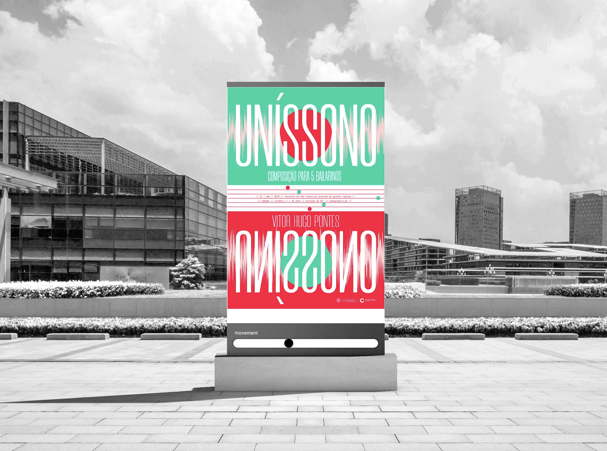

UNÍSSONO


This work was done in the context of the course unit Typography in digital media, in the 2nd year of the Degree in Design and Multimedia, in the Faculty of Science and Technology, University of Coimbra, under the guidance of teachers Nuno Coelho and Paul Hardman. The goal was to choose one of the proposed themes and elaborate a poster that explored communication design, from the possibilities allowed by digital media, based on the time and interactivity of a communication object placed in a social context. This, initially static, had to be manipulated by external elements, reacting to the audience’s behavior. The chosen theme was Uníssono - Composition for 5 Dancers, a contemporary dance piece directed by Vitor Hugo Pontes, fictitiously to be performed on December 21, 2019, at the Convento de São Francisco.
“Unison - which vibrates in harmony with others”.
The concept for this moving poster was developed according to the details of the event. It consists of a
choreography with five performers and aims to unite five solos from the same score. Thus, the analogy to the
musical score was made, unfolding it into two types of elements: five circles, which represent the performers
and the musical notes; and five lines.
The pink lines move according to the interaction between the performers and the music, bringing different
frequencies and amplitudes, as happens in music and movement. The colors used were chosen according to the
performers’ costumes.
The interaction consists of noticing the movement around the poster, inviting the participants to take part in
it.
Design: Mariana Silva